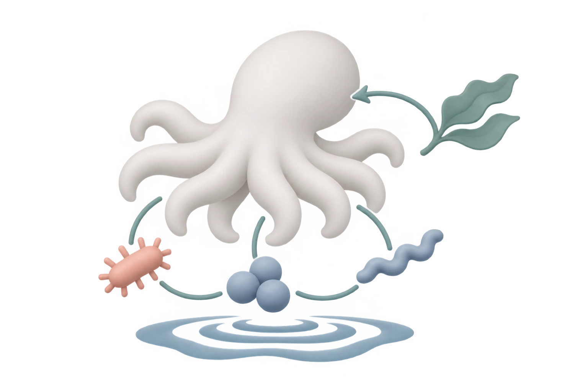

Microbial Ecology
미생물 생태
야생동물의 계통과 먹이, 서식 환경에 따라 장내미생물이 달라지는 이유와 숙주에 특이적인 공생 관계를 연구합니다.

Animal Microbiomes
숙주의 계통과 생태적 조건이 반영된 장내미생물
야생동물의 장내미생물은 숙주의 먹이와 서식 환경, 진화적 관계의 영향을 받습니다. 우리는 오징어와 문어를 포함한 두족류, 다른 연체동물과 어류를 비교해 이러한 요인들이 장내미생물 군집과 어떤 관계가 있는지 연구하였습니다.
분석 결과, 두족류의 장내미생물은 숙주 종마다 구별되며 숙주의 진화적 관계를 반영했습니다. 주요 미생물인 Mycoplasma는 특정 숙주에 집중되는 경향이 뚜렷했고, Photobacterium에는 여러 숙주에 분포하는 유형이 많았습니다. 연체동물 전체의 비교에서는 숙주의 계통과 함께 먹이 및 서식 환경이 군집 구성과 연관된다는 사실을 확인했습니다.

Freshwater Fish Microbiomes
가평천 담수어의 먹이, 계통, 서식 환경과 장내미생물
Ongoing study
현재는 가평천 담수어를 대상으로 숙주의 먹이(host diet), 계통(phylogeny), 서식 환경(environment)이 장내미생물 형성에 미치는 영향을 연구하고 있습니다. 자연환경에서 이 요인들은 함께 달라지기 때문에, 어떤 미생물 차이가 숙주의 특성과 관련되고 어떤 차이가 먹이와 주변 환경에 관련되는지를 구분하는 것이 중요합니다.
담수어의 장내미생물 자료를 숙주의 식성과 계통 및 서식 환경 정보와 연결해, 각 요인과 군집 구성의 관계를 분석하고 있습니다. 이를 통해 자연 하천에서 숙주와 환경의 차이가 장내미생물 군집을 형성하는 원리를 밝히고자 합니다.